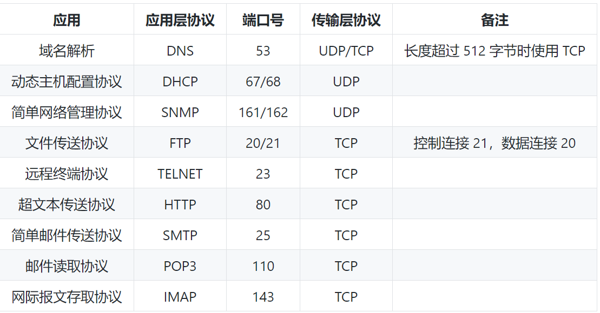

一 概述
网络的网络
网络连接主机，互联网连接不同的网络。
ISP
互联网服务提供商 ISP
主机之间的通信方式
客户-服务器（C/S）：客户是服务的请求方，服务器是服务的提供方。
对等（P2P）：不区分客户和服务器。
电路交换与分组交换
电路交换
两个用户之间建立物理链路
分组交换
同一线路同时传输多个分组。使用了存储转发过程。
时延
总时延 = 排队时延 + 处理时延 + 传输时延 + 传播时延
排队时延
分组在路由器的输入队列和输出队列中排队等待的时间，取决于网络当前的通信量。
处理时延
主机或路由器收到分组时进行处理所需要的时间
传输时延
主机或路由器传输数据帧所需要的时间
传播时延
电磁波在信道中传播所需要花费的时间，电磁波传播的速度接近光速
计算机网络体系结构
五层协议
应用层：为特定应用程序提供数据传输服务，例如http、dns协议
传输层：为进程提供通用数据传输服务。定义通用的传输层协议就可以支持不断增多的应用层协议。传输层两种协议：传输控制协议：TCP。用户数据报协议：UDP
网络层：为主机提供数据传输服务。网络层把传输层传递下来的报文段或者用户数据报封装成分组。
数据链路层：主机之间有很多链路。链路层协议就是为统一链路的主机提供数据传输服务。
物理层：在传输媒体上传输数据比特流
OSI
表示层 ：数据压缩、加密以及数据描述，这使得应用程序不必关心在各台主机中数据内部格式不同的问题。
会话层 ：建立及管理会话。
TCP/IP
数据链路层和物理层合并为网络接口层
数据在各层之间的传递过程
向下的过程需要添加下层协议需要的首部或者尾部。向上则拆开首部和尾部。
二 物理层
- 通信方式：
- 单工通信：单向传输
- 半双工通信：双向交替传输
- 全双工通信：双向同时传输
- 带通调制：带通调制把数字信号转换为模拟信号。
三 链路层
基本问题
- 封装成帧：将网络层传下来的分组添加首部和尾部
- 透明传输：转义字符用来区分当首部和尾部含有相同内容的情况。转义字符透明传输不会被察觉。
- 差错检测：循环冗余检验——crc
信道分类
- 广播信道：一对多通信。所有的节点都在同一个广播信道上发送数据，为了避免发生冲突采用信道复用技术和csma/cd协议进行控制协调。
信道复用技术:
- 频分复用：主机在相同的时间占用不同的频带带宽资源。
- 时分复用：在不同的时间占用相同的频带带宽资源。
- 统计时分复用：只要有数据就集中起来组成时分复用，不固定每个用户在时分复用帧中的位置。
- 波分复用：光
- 码分复用
csma/cd协议:
- 表示载波监听多点接入/碰撞检测
- 多点接入：总线型网络，许多主机以多点的方式连接到总线上。
- 载波监听：每个主机必须不停的监听信道
- 碰撞检测：由于传播时延的存在，可能会发生碰撞。当发生碰撞时，站点要停止发送，等待一段时间再发送。这个时间采用 截断二进制指数退避算法 来确定。
- 点对点信道：一对一通信。PPP协议。
PPP协议
- PPP 协议是用户计算机和 ISP 进行通信时所使用的数据链路层协议。
MAC地址
MAC 地址是链路层地址
一台主机拥有多少个网络适配器就有多少个 MAC 地址。例如笔记本电脑普遍存在无线网络适配器和有线网络适配器，因此就有两个 MAC 地址。
局域网
网络为一个单位所拥有。
以太网
- 星型拓扑结构局域网。
- 交换机连接，不会发生碰撞，根据mac地址进行存储转发。
- 帧格式：类型（标记上层使用的协议）、FCS（帧检验序列）
交换机
- 交换机内有交换表，存储mac地址到接口的映射。
- 当主机之间发送数据时存入映射数据。
虚拟局域网
- 建立与物流位置无关的逻辑组。在同一个虚拟局域网中的成员才会收到链路层广播信息。
- 使用vlan干线连接建立虚拟局域网。
四 网络层
概述
使用ip协议将异构的物理网络连接起来。与之配套的还有地址解析协议ARP、网络控制报文协议ICMP、网络组管理协议IGMP
IP数据报格式
ip地址编址方式
三个历史阶段
- 分类
- 网络号 主机号
- 子网划分
- 将主机号拆分，作为子网号，形成三级ip地址。
- 对于子网要设置子网掩码。外部网络看不到子网的存在。
- 无分类CIDR
- 网络前缀和主机号。
- 记法：ip地址/网络前缀长度
地址解析协议ARP
- 网络层实现主机之间的通信，链路层实现具体每段链路之间的通信。因此ip地址的源地址和目的地址始终不变。而mac地址随着了线路的改变而改变。
- ip地址——mac地址：ARP
- 如果主机 A 知道主机 B 的 IP 地址，但是 ARP 高速缓存中没有该 IP 地址到 MAC 地址的映射，此时主机 A 通过广播的方式发送 ARP 请求分组，主机 B 收到该请求后会发送 ARP 响应分组给主机 A 告知其 MAC 地址，随后主机 A 向其高速缓存中写入主机 B 的 IP 地址到 MAC 地址的映射。
网络控制报文协议ICMP
- 封装在ip数据报中。
- ping：测试两台主机之间的连通性。原理是通过向目的主机发送 ICMP Echo 请求报文，目的主机收到之后会发送 Echo 回答报文。Ping 会根据时间和成功响应的次数估算出数据包往返时间以及丢包率。
- Traceroute：跟踪一个分组从源点到终点的路径。发送的 IP 数据报封装的是无法交付的 UDP 用户数据报，并由目的主机发送终点不可达差错报告报文。
虚拟专用网vpn
- VPN 使用公用的互联网作为本机构各专用网之间的通信载体。专用指机构内的主机只与本机构内的其它主机通信；
网络地址转换NAT
- 专用网内部主机使用本地ip想要与互联网主机通信时，可以使用NAT将本地ip转换为全球ip。
- 多个专用网内部的主机公用一个全球ip地址。
路由器结构
- 路由选择和分组转发
- 分组转发：交换结构、一组输入端口一组输出端口
- 分组转发流程
- 从数据报的首部提取目的主机的 IP 地址 D，得到目的网络地址 N。
- 若 N 就是与此路由器直接相连的某个网络地址，则进行直接交付；
- 若路由表中有目的地址为 D 的特定主机路由，则把数据报传送给表中所指明的下一跳路由器；若路由表中有到达网络 N 的路由，则把数据报传送给路由表中所指明的下一跳路由器；
- 若路由表中有一个默认路由，则把数据报传送给路由表中所指明的默认路由器；
- 报告转发分组出错。
- 路由选择协议
4.1 自治系统内部的路由选择：RIP和OSPF
内部网关协议RIP：
- 基于距离向量的路由选择协议。距离是指跳数，直接相连的路由器跳数为 1。跳数最多为 15，
- 按固定的时间间隔仅和相邻路由器交换自己的路由表
- 所有路由器最终会知道到达本自治系统中任何一个网络的最短距离和下一跳路由器地址。
内部网关协议OSPF：
- 开放最短路径优先
- 向本自治系统中的所有路由器发送信息
- 所有路由器都具有全网的拓扑结构图，并且是一致的
4.2 外部网关协议：BGP
- BGP（Border Gateway Protocol，边界网关协议）
- BGP 只能寻找一条比较好的路由，而不是最佳路由。
- 每个 AS（自治系统） 都必须配置 BGP 发言人，通过在两个相邻 BGP 发言人之间建立 TCP 连接来交换路由信息。
五 传输层
真正通信的并不是主机而是主机中的进程。传输层提供了进程间的逻辑通信
UDP——用户数据报协议
- 无连接，对于应用程序传下来的报文不合并不拆分，只是添加UDP首部，支持一对一、一对多、多对多和多对一的交互通信
- 首部字段只有 8 个字节，包括源端口、目的端口、长度、检验和。12 字节的伪首部是为了计算检验和临时添加的。
TCP——传输控制协议
- 面向连接提供可靠交付，面向字节流（把应用层传下来的报文看成字节流），一对以点对点连接。
- 首部格式
- 确认 ACK ：当 ACK=1 时确认号字段有效，否则无效。TCP 规定，在连接建立后所有传送的报文段都必须把 ACK 置 1
- 同步 SYN ：在连接建立时用来同步序号。当 SYN=1，ACK=0 时表示这是一个连接请求报文段。若对方同意建立连接，则响应报文中 SYN=1，ACK=1。
- 终止 FIN ：用来释放一个连接，当 FIN=1 时，表示此报文段的发送方的数据已发送完毕，并要求释放连接。
- 三次握手
- 假设 A 为客户端，B 为服务器端。
- 首先 B 处于 LISTEN（监听）状态，等待客户的连接请求。
- A 向 B 发送连接请求报文，SYN=1，ACK=0，选择一个初始的序号 x。
- B 收到连接请求报文，如果同意建立连接，则向 A 发送连接确认报文，SYN=1，ACK=1，确认号为 x+1，同时也选择一个初始的序号 y。
- A 收到 B 的连接确认报文后，还要向 B 发出确认，确认号为 y+1，序号为 x+1。
- B 收到 A 的确认后，连接建立。
- 三次握手的原因：防止失效的连接请求到达服务器，让服务器错误打开连接。比如滞留的请求和等不到回应时重新发送的请求，就会使服务器打开两个链接。三次握手就会使得客户端忽略服务器之后发送的对滞留链接请求的连接确认。
- 四次挥手
- A 发送连接释放报文，FIN=1。
- B 收到之后发出确认，此时 TCP 属于半关闭状态，B 能向 A 发送数据但是 A 不能向 B 发送数据。
- 当 B 不再需要连接时，发送连接释放报文，FIN=1。
- A 收到后发出确认，进入 TIME-WAIT 状态，等待 2 MSL（最大报文存活时间）后释放连接。
- B 收到 A 的确认后释放连接。
- 四次挥手的原因
- 客户端发送了 FIN 连接释放报文之后，服务器收到了这个报文，就进入了 CLOSE-WAIT 状态。这个状态是为了让服务器端发送还未传送完毕的数据，传送完毕之后，服务器会发送 FIN 连接释放报文。
- TIME-WAIT：
- 客户端接收到服务器端的 FIN 报文后进入TIME-WAIT 状态，此时并不是直接进入 CLOSED 状态，还需要等待一个时间计时器设置的时间 2MSL。这么做有两个理由：
- 确保最后一个确认报文能够到达。如果 B 没收到 A 发送来的确认报文，那么就会重新发送连接释放请求报文，A 等待一段时间就是为了处理这种情况的发生。
- 等待一段时间是为了让本连接持续时间内所产生的所有报文都从网络中消失，使得下一个新的连接不会出现旧的连接请求报文。
- （保证客户端的确认链接到达，保证之前的报文都消失）
- 可靠传输：超时重来。
- 滑动窗口：窗口属于缓存的一部分。暂时存放字节流。发送窗口左部的字节发送并得到确认就将窗口向右滑动一定距离。接收窗口左部字节已经发送确认就向右滑动接收窗口。
- 流量控制：控制发送方速率，接收方发送的确认报文中的窗口字段可以用来控制发送方窗口大小——让接收方能来得及接收。
- 拥塞控制：降低整个网络的拥塞程度。
- 慢开始与拥塞避免：最初执行慢开始，初始为1.当收到确认时，发送加倍增加。设置一个门限，当超过门限时不可以成倍增加。
- 快重传与快恢复：当报文丢失立即执行快重传。初始设置为门限值。
六 应用层
域名系统
- 域名具有层次结构：根域名、顶级域名、二级域名。
文件传送协议
- FTP使用TCP进行连接。使用控制连接和数据连接来传送数据。
- FTP主动：服务器端主动建立数据连接，服务器端口号为20，客户端端口号随机，但是必须大于1024.需要配置客户端的防火墙。
- FTP被动：客户端主动建立连接。客户端端口号自己指定，服务器端口号随机。
动态主机配置协议
- DHCP
- 即插即用，不用手动配置ip地址等信息。
- 可以配置ip地址、子网掩码、网关ip地址。
- DHCP 工作过程：
- 客户端发送 Discover 报文，该报文的目的地址为 255.255.255.255:67，源地址为 0.0.0.0:68，被放入 UDP 中，该报文被广播到同一个子网的所有主机上。
- 如果客户端和 DHCP 服务器不在同一个子网，就需要使用中继代理。
- DHCP 服务器收到 Discover 报文之后，发送 Offer 报文给客户端，该报文包含了客户端所需要的信息。因为客户端可能收到多个 DHCP 服务器提供的信息，因此客户端需要进行选择
- 。如果客户端选择了某个 DHCP 服务器提供的信息，那么就发送 Request 报文给该 DHCP 服务器。
- DHCP 服务器发送 Ack 报文，表示客户端此时可以使用提供给它的信息。
远程登录信息
- TELNET（Telnet）登录到远程主机上，并且远程主机的输出返回。
- 可以使用不同操作系统的使用差异。
电子邮件协议
- 用户代理、邮件服务器、邮件协议
- 邮件协议：发送——SMTP，读取——POP2和IMAP
- SMTP：发送ASCII码
- POP3：只要用户从服务器上读取邮件就删除该邮件。
- IMAP：客户端和服务器的邮件保持同步，如果不手动删除，服务器的邮件就不会被删除。
常用端口
- 
web页面请求过程
- DHCP配置主机信息
- ARP解析MAC地址
- DNS解析域名
- HTTP请求页面
七 Socket

IO模型
- 等待数据从网络中到达，当数据到达时，复制到内核中的某个缓冲区，然后将数据从内核缓冲区复制到应用进程缓冲区。
- 阻塞式IO：应用进程被阻塞，直到数据从内核缓冲区复制到应用进程缓冲区中才返回。当进程在等待数据时，若该数据一直没有产生，则该进程将一直等待，直到等待的数据产生为止
- 非阻塞式IO：有数据收到就返回数据，没有收到就内核返回错误码，应用程序继续执行，不断执行系统调用来获知IO是否完成——轮询。当进程等待内核的数据，而当该数据未到达的时候，进程会不断询问内核，直到内核准备好数据。
- IO复用：使用select和poll，单个进程处理多个数据。当多个套接字数据中有一个变为已读，就可以复试数据到进程中。通过一种机制，可以监视多个描述符，一旦某个描述符就绪（一般是读就绪或者写就绪），能够通知程序进行相应的读写操作。
- 信号驱动IO：当网络套接字可读后，内核通过发送SIGIO信号通知应用进程，于是应用可以开始读取数据。用户态进程不再等待内核态的数据准备好，直接可以去做别的事情。要等待数据的时候，首先用户态会向内核发送一个信号，告诉内核我要什么数据，然后用户态就不管了，做别的事情去了，而当内核态中的数据准备好之后，内核立马发给用户态一个信号，说”数据准备好了，快来查收“，用户态进程收到之后，立马调用recvfrom，等待数据从内核空间复制到用户空间，待完成之后recvfrom返回成功指示，用户态进程才处理别的事情。
- 异步IO：首先用户态进程告诉内核态需要什么数据（通过aio_read），然后用户态进程就不管了，做别的事情，内核等待用户态需要的数据准备好，然后将数据复制到用户空间，此时才告诉用户态进程，”数据都已经准备好，请查收“，然后用户态进程直接处理用户空间的数据。
- 阻塞式I/O、非阻塞式I/O、I/O复用模型
和信号驱动 I/O 是同步I/O模型，因为在等待数据的过程中，这三种模型中的进程都没有去做别的事情，即便是非阻塞式的轮询，也可以看作是一种同步。 
IO复用
- select
- 允许程序见识一组文件描述符，等待一个或者多个描述符成为就绪状态。
- 只能监听少于 FD_SETSIZE 数量的描述符
- 三种类型的描述符类型：readset、writeset、exceptset，分别对应读、写、异常条件的描述符集合。
- poll
- 描述符是 pollfd 类型的数组
- 比较
- select 会修改描述符，而 poll 不会
- select 的描述符类型使用数组实现，FD_SETSIZE 大小默认为 1024，因此默认只能监听少于 1024 个描述符。如果要监听更多描述符的话，需要修改 FD_SETSIZE 之后重新编译；而 poll 没有描述符数量的限制
- poll 提供了更多的事件类型，并且对描述符的重复利用上比 select 高。
- 如果一个线程对某个描述符调用了 select 或者 poll，另一个线程关闭了该描述符，会导致调用结果不确定。
- select 和 poll 速度都比较慢，每次调用都需要将全部描述符从应用进程缓冲区复制到内核缓冲区
- epoll
- 向内核注册新的描述符或者是改变某个文件描述符的状态。已注册的描述符在内核中会被维护在一棵红黑树上，通过回调函数内核会将 I/O 准备好的描述符加入到一个链表中管理，进程调用 epoll_wait() 便可以得到事件完成的描述符。
- 描述符从进程缓冲区向内核缓冲区拷贝一次，并且进程不需要通过轮询来获得事件完成的描述符。
- 适用于linux，对多线程编程更加友好。一个线程调用了 epoll_wait() 另一个线程关闭了同一个描述符也不会产生像 select 和 poll 的不确定情况。
- 工作模式：LT模式——epoll_wait()检测到描述事件到达，通知进程但是不立即处理。下次调用会再次通知。ET模式——通知之后必须立即处理事件，下次调用不会再得到通知。减少了epoll被重复触发的次数。
- 应用场景
- select：实时性要求高的场景，几乎所有平台支持
- poll：没有数量限制，
- epoll：linux，长连接，大于1000个描述符。
八 HTTP
1. 基础概念
- URI
- URL：统一资源定位符——比如：https：//www.google.com
- URN：统一资源名称
- URI：统一资源标识符，包括URL和URN
- 请求和响应报文
2. HTTP方法
客户端发送的请求报文第一行为请求行，包含了方法字段。
- get：获取资源。
- HEAD：获取报文首部，与Get类似但是不返回实体主体部分。
- POST：用来传输数据，Get用来获取资源。
- PUT：上传文件。
- PATCH：对资源进行部分修改。
- DELETE：删除文件
- OPTIONS：查询支持的方法
- CONNECT：要求与代理服务器通信时建立隧道。
- TRACE：追踪路径
3. HTTP状态码
- 服务器返回的响应报文中第一行为状态行，包含了状态码和原因短语。
- 1XX 信息：接受的请求正在处理，客户端可以继续发送请求或者忽略这个响应。
- 2xx 成功：
- 200 OK
- 204 No Content ：请求已经成功处理。一般在只需要从客户端往服务器发送信息，而不需要返回数据时使用
- 206 Partial Content ：表示客户端进行了范围请求，响应报文包含由 Content-Range 指定范围的实体内容。
- 3xx重定向：
- 301 Moved Permanently ：永久性重定向
- 302 Found ：临时性重定向
- 303 See Other ：和 302 有着相同的功能，但是 303 明确要求客户端应该采用 GET 方法获取资源。注：虽然 HTTP 协议规定 301、302 状态下重定向时不允许把 POST 方法改成 GET 方法，但是大多数浏览器都会在 301、302 和 303 状态下的重定向把 POST 方法改成 GET 方法。
- 304 Not Modified ：如果请求报文首部包含一些条件，例如：If-Match，If-Modified-Since，If-None-Match，If-Range，If-Unmodified-Since，如果不满足条件，则服务器会返回 304 状态码。
- 307 Temporary Redirect ：临时重定向，与 302 的含义类似，但是 307 要求浏览器不会把重定向请求的 POST 方法改成 GET 方法。
- 4xx客户端错误：
- 400 Bad Request ：请求报文中存在语法错误。
- 401 Unauthorized ：该状态码表示发送的请求需要有认证信息（BASIC 认证、DIGEST 认证）。如果之前已进行过一次请求，则表示用户认证失败。
- 403 Forbidden ：请求被拒绝。
- 404 Not Found
- 5xx服务器错误：
- 500 Internal Server Error ：服务器正在执行请求时发生错误
- 503 Service Unavailable ：服务器暂时处于超负载或正在进行停机维护
4. HTTP首部
- 通用首部字段
- 请求首部字段
- 响应首部字段
- 实体首部字段
5. 具体应用
- 连接管理
- 长连接只需要建立一次TCP连接就能进行多次HTTP通信。
- 流水线：在同一条长连接上发出请求，不用等待响应返回，减少延迟。
- Cookie
- 服务器发送到用户浏览器并保存在本地的一小块数据，在浏览器之后请求服务器时被携带，用于告知服务端两个请求是否来自同一个浏览器。
- 用途：会话状态管理（用户登录状态、购物车）、个性化设置（用户自定义设置）、浏览器行为跟踪
- 过程：服务器发送的响应报文包含 Set-Cookie 首部字段，客户端得到响应报文后把 Cookie 内容保存到浏览器中。客户端之后对同一个服务器发送请求时，会从浏览器中取出 Cookie 信息并通过 Cookie 请求首部字段发送给服务器。
- 分类：会话期：浏览器关闭后自动删除。持久性：指定过期时间。
- 作用域：Domain指定了哪些主机可以接受Cookie。Path指定了主机下的哪些路径可以接受Cookie。
- JavaScript：document.cookie创建cookie。
- HttpOnly：标记为此的cookie不能被js脚本调用。可以避免跨站脚本攻击。
- Secure：标记为secure的cookie只能通过https协议加密过的请求发送给服务端
- Session：信息通过 Cookie 存储在用户浏览器中， Session 存储在服务器端。——用户进行登录时，用户提交包含用户名和密码的表单，放入 HTTP 请求报文中；——服务器验证该用户名和密码，如果正确则把用户信息存储到 Redis 中，它在 Redis 中的 Key 称为 Session ID；——服务器返回的响应报文的 Set-Cookie 首部字段包含了这个 Session ID，客户端收到响应报文之后将该 Cookie 值存入浏览器中；——客户端之后对同一个服务器进行请求时会包含该 Cookie 值，服务器收到之后提取出 Session ID，从 Redis 中取出用户信息，继续之前的业务操作。
- 浏览器禁用cookie：使用session，将session id作为url的参数进行传递。
- Cookie 只能存储 ASCII 码字符串，而 Session 则可以存储任何类型的数据，因此在考虑数据复杂性时首选 Session——Cookie 存储在浏览器中，可以将 Cookie 值进行加密，然后在服务器进行解密；——对于大型网站，如果用户所有的信息都存储在 Session 中，那么开销是非常大的，因此不建议将所有的用户信息都存储到 Session 中。
- 缓存
- 优点：缓解服务器压力，降低客户端获取资源的延迟。
- 实现方法：代理服务器进行缓存、客户端浏览器进行缓存
- 通过 Cache-Control 首部字段来控制缓存。
- 缓存验证： ETag 首部字段：是资源的唯一标识。将缓存资源的 ETag 值放入 If-None-Match 首部，服务器收到该请求后，判断缓存资源的 ETag 值和资源的最新 ETag 值是否一致，如果一致则表示缓存资源有效，返回 304 Not Modified。
- 内容协商：通过内容协商返回最合适的内容，例如根据浏览器的默认语言选择返回中文界面还是英文界面。有服务器驱动型和代理驱动型。
- 内容编码：将实体主体进行压缩，从而减少传输的数据量。
- 范围请求：如果网络出现中断，服务器只发送了一部分数据，范围请求可以使得客户端只请求服务器未发送的那部分数据，从而避免服务器重新发送所有数据：Range、Accept—Ranges、响应状态码
- 分块传输编码：数据分割成多块，让浏览器逐步显示页面。
- 多部分对象集合：一份报文主体内可含有多种类型的实体同时发送，每个部分之间用 boundary 字段定义的分隔符进行分隔，每个部分都可以有首部字段。
- 虚拟主机：http采用虚拟主机，使一台服务器有多个域名，并且在逻辑上可以看成多个服务器。
- 通信数据转发：代理（代理服务器接受客户端的请求转发给其他服务器。正向反向代理）、网关（网关服务器将http转化为其他协议进行通信从而请求其他非http服务器的服务）、隧道（使用ssl等加密手段，在客户端和服务器端建立安全的通信线路。）
6. HTTPS
Https不是协议，而是使用隧道进行通信。先让thhp和ssl通信，再让ssl和tcp通信。
- 加密
- 对称密钥加密：加密和解密使用同一密钥。
- 非对称密钥加密：公开密钥。
- HTTPS采用混合加密机制：使用非对称密钥加密方式，传输对称密钥加密方式所需要的 Secret Key，获取到 Secret Key 后，再使用对称密钥加密方式进行通信
- 认证
- CA 在判明提出申请者的身份之后，会对已申请的公开密钥做数字签名，然后分配这个已签名的公开密钥，并将该公开密钥放入公开密钥证书后绑定在一起。进行 HTTPS 通信时，服务器会把证书发送给客户端。客户端取得其中的公开密钥之后，先使用数字签名进行验证，如果验证通过，就可以开始通信
- 完整性保护：结合加密和认证这两个操作
- 缺点：速度慢
7. HTTP/2.0
- 二进制分帧层
- 将报文分成 HEADERS 帧和 DATA 帧
- 只会有一个 TCP 连接存在，它承载了任意数量的双向数据流
- 服务端推送：HTTP/2.0 在客户端请求一个资源时，会把相关的资源一起发送给客户端，客户端就不需要再次发起请求了
- 首部压缩：要求客户端和服务器同时维护和更新一个包含之前见过的首部字段表，从而避免了重复传输
8. HTTP/1.1 新特性
- 默认是长连接
- 支持流水线
- 支持同时打开多个 TCP 连接
- 支持虚拟主机
- 新增状态码 100
- 支持分块传输编码
- 新增缓存处理指令 max-age
9. GET和POST比较
- 作用：GET 用于获取资源，而 POST 用于传输
- 参数：GET 的参数是以查询字符串出现在 URL 中，POST 的参数存储在实体主体中
- 安全：post传输数据会使状态发生改变。
- 幂等性：同样的请求被执行一次与连续执行多次的效果是一样的，服务器的状态也是一样的。GET具有幂等性。POST如果连续调用多次记录会改变。
- 可缓存：GET可缓存，POST不可。
- XMLHttpRequest：XMLHttpRequest 是一个 API，它为客户端提供了在客户端和服务器之间传输数据的功能。它提供了一个通过 URL 来获取数据的简单方式，并且不会使整个页面刷新。这使得网页只更新一部分页面而不会打扰到用户。其中的POST：先发送header再发送data。GET是header和data一起发送。